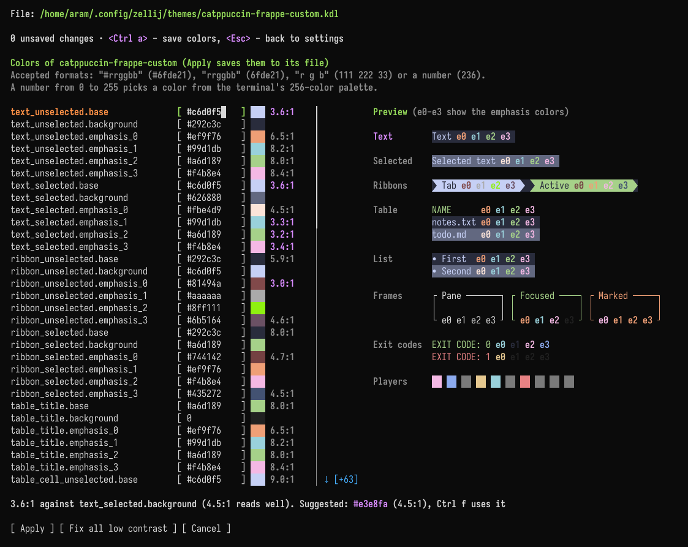

Themes
Using the built-in themes
The built-in themes in Zellij can be used by setting the theme [THEME_NAME] in the configuration file. Take a look at the list of themes to see what's possible.
Since 0.46.0, the default theme has a new palette, and is paired with a new default-light theme. The theme that was called default before 0.46.0 is bundled as classic:
theme "classic"
Automatic dark and light theme switching
When none of theme, theme_dark and theme_light is set, Zellij switches automatically between the bundled default theme (when the host terminal is in dark mode) and default-light (when it is in light mode).
Other themes can be chosen for each mode:
theme_dark "catppuccin-mocha"
theme_light "catppuccin-latte"
How these options combine:
| Set in the configuration | Result |
|---|---|
| nothing | switches between default and default-light |
theme_dark and theme_light | switches between the two (with or without theme) |
only theme_dark | switches between it and default-light |
only theme_light | switches between default and it |
theme, with at most one of theme_dark / theme_light | no switching, theme is always used |
Zellij detects the color scheme of the terminal it is attached to (through DSR 997 replies and CSI 2031 change notifications) and switches themes when it changes. Terminals that do not report their color scheme will not trigger switching.
The theme can also be switched manually, with these actions (bindable in the keybinds block) and their CLI equivalents:
| Action | CLI |
|---|---|
SetDarkTheme | zellij action set-dark-theme |
SetLightTheme | zellij action set-light-theme |
ToggleTheme | zellij action toggle-theme |
Programs running inside panes can subscribe to color scheme changes themselves with CSI ? 2031 h and will receive CSI ?997;1 n (dark) or CSI ?997;2 n (light) whenever the mode changes.
Overriding the terminal's reported hue
The explicit_theme_hue option pins the session to a dark or light appearance, ignoring what the host terminal reports:
explicit_theme_hue "dark"
It is resolved before the first render, so the session starts with the intended appearance instead of correcting itself once the terminal replies. This is useful for terminals that report the wrong color scheme, or that do not report one at all. When it is unset, the host terminal decides.
It only selects which of the dark and light themes applies, following the table above. When theme is set and switching is off, it has no effect.
Theme Definition Specification
Themes in Zellij are defined according to UI components. These components are used in the various plugins that make up the Zellij interface, and can also be used dynamically in user plugins.

Structure of a theme definition
Note: the easiest way to create or change a theme is the theme editor, which shows a preview of the colors and can fix colors that are hard to read. The structure below is what it writes to the theme file.
A theme definition is a KDL file (or part of one). It has a node named themes, with a node inside it named after the theme, and inside that a list of nodes defining the UI components:
themes {
dracula {
ribbon_unselected {
base 0 0 0
background 255 153 0
emphasis_0 255 53 94
emphasis_1 255 255 255
emphasis_2 0 217 227
emphasis_3 255 0 255
}
}
}
A full theme has one such node for each of the components listed below.
It can either be placed directly in the main configuration file or in a separate directory.
Theme UI Components
Components have the following attributes, each one including a space separated list of three numbers representing the RGB color. A color can also be given as a hex string (eg. "#ff8c00" or "#f80") or as a single number from the 256-color palette.
base- the base color of the componentbackground- the background color of the componentemphasis_0,emphasis_1,emphasis_2,emphasis_3- the color of text emphases inside the text. These are used either to differentiate whole text components one from another (with each having a full color of one of the emphases), or even combined in a single component (eg. when indicating indices in fuzzy find results). Not all of these are used in the base UI, but they might be used in user plugins.
Following is the list of available component specifications:
text_unselected
This component refers to the bare text parts of the Zellij UI (for example, the Ctrl or Alt modifier indications in the status-bar).
text_selected
This component refers to the bare text parts of the Zellij UI when they need to indicate selection (eg. when paging through search results). This is often done by providing them a different color background than their unselected counterparts.
ribbon_unselected
Ribbons are used often in the Zellij UI, examples are the tabs and the keybinding modes in the status bar. Its emphasis colors (emphasis_0 to emphasis_3) color parts of the text inside unselected ribbons, eg. when a plugin highlights part of a ribbon's text with a color index. The color of hovered tabs is set by ribbon_hover.
ribbon_selected
Selected ribbons are often indicated with a different color than their unselected counterparts (eg. the focused tab, or the active keybinding mode in the status bar).
ribbon_hover
The colors of a ribbon that is hovered with the mouse, or shown as an alternate tab (the shading that tells neighboring tabs apart). This section is optional.
themes {
my-theme {
ribbon_hover {
base 11 11 11
background 220 220 220
emphasis_0 79 26 34
emphasis_1 60 20 70
emphasis_2 20 49 79
emphasis_3 99 11 20
}
}
}
The built-in bars use these colors as follows:
| Color | Used for |
|---|---|
background | The fill of hovered tabs, alternate tabs, the hovered new-tab + button and hovered status-bar hints |
base | The text on hovered or alternate tabs, and on hovered hints |
emphasis_0 | The key labels in hovered status-bar hints |
emphasis_3 | The text of a hovered or alternate tab whose bell is ringing |
emphasis_1, emphasis_2 | Not used by the built-in bars. Available to plugins that draw their own hover state |
When a theme has no ribbon_hover section:
- If it has a
ribbon_unselectedsection, the hover fill isribbon_unselected'semphasis_1, and the other hover colors are taken fromribbon_unselected. - If it has neither section, the built-in default hover colors are used.
- Legacy themes (written with
fg,bg,redand so on) get the sameemphasis_1fallback.
All the built-in themes have a ribbon_hover section.
table_title
The table UI component has a different style applied to its title line than the rest of the table. This is what differentiates this line.
table_cell_unselected
The style of an unselected cell in a table. Cells can be specified as selected or unselected individually, but it is often the case that a full table line is specified to have selected or unselected cells.
table_cell_selected
Often differentiated from its unselected counterpart by changing its background color.
list_unselected
A line item in a nested list, it can be arbitrarily indented. Its indentation indication is not included in the item specification.
list_selected
Often differentiated from its unselected counterpart with a different background color.
frame_unselected
The frame around the other non-focused panes.
frame_selected
The frame around the focused pane.
frame_highlight
This is the frame around the focused pane when the user enters a mode other than the base mode (eg. PANE or TAB mode).
exit_code_success
The color of the exit code indication (here, only the base part of the specification is used, the rest are reserved for future use). These can be seen in command panes (eg. when using zellij run) after the command exited successfully.
exit_code_error
The color of the exit code indication (here, only the base part of the specification is used, the rest are reserved for future use). These can be seen in command panes (eg. when using zellij run) after the command exited with an error.
multiplayer_user_colors
This is the only theme section that is different from the rest of the UI components and is defined thus:
multiplayer_user_colors {
player_1 255 0 255
player_2 0 217 227
player_3 0
player_4 255 230 0
player_5 0 229 229
player_6 0
player_7 255 53 94
player_8 0
player_9 0
player_10 0
}
Each player represents the color given to a user joining (attaching) to an active session. These colors appear the same to all users and are given by order of attaching.
terminal_colors
A theme can also define the sixteen ANSI colors that programs use (eg. ls --color or a shell prompt). Any of the sixteen can be left out:
terminal_colors {
black 33 34 44
red 255 85 85
green 80 250 123
yellow 241 250 140
blue 189 147 249
magenta 255 121 198
cyan 139 233 253
white 248 248 242
bright_black 98 114 164
bright_red 255 110 110
bright_green 105 255 148
bright_yellow 255 255 165
bright_blue 214 172 255
bright_magenta 255 146 223
bright_cyan 164 255 255
bright_white 255 255 255
}
These colors must be given as RGB or as a hex string, not as a number from the 256-color palette.
They are only used by the Zellij terminal window, which paints these colors itself. Inside another terminal emulator, that terminal's own colors are used. The theme section of the terminal block takes priority over them. Most of the built-in themes include this section.
The theme editor
Themes can be created and edited from inside Zellij, without editing files by hand, in the theme editor of the settings screen (Settings → Appearance → Themes).

- Creating a theme:
aadds a new theme. Built-in themes and themes from the themes folder are read-only: copy one to start from it. - Editing colors:
Enteropens the colors of the selected theme.Enterand the arrow keys move between colors, which can be typed as#rrggbb,rrggbb,r g bor a number from the 256-color palette.Ctrl aapplies the changes. - Previewing: a sample of the Zellij interface drawn with the theme's colors is shown next to them (when the pane is wide enough). When the theme being edited is the active one, the whole of Zellij changes along with it.
- Hover colors: the editor has a row for each of the six
ribbon_hovercolors, and the preview shows a "Hover" ribbon next to "Tab" and "Active". When a theme without aribbon_hoversection is opened, these rows are filled with the colors the theme currently uses for hover, and saving writes the section to the theme. - Fixing contrast: colors that are hard to read against their background are pointed out. Most text colors are checked against a contrast of 3:1. The
emphasis_1andemphasis_2colors of ribbons are checked against their ribbon's background, and the hover text colors against the hover fill, at 4.5:1.Ctrl fraises the contrast of the selected color to its target.Ctrl efixes every color below 3:1, changing each color only as much as needed; colors between 3:1 and 4.5:1 are marked but left forCtrl f. - Managing themes:
nrenames a theme,Deldeletes it,rreverts unsaved changes and/searches the list.
Getting Zellij to pick up the theme
While developing and iterating over a theme, the easiest way would be to define it directly in the main configuration file (add the themes block defined above with your theme) and then set the:
theme "your_theme_name"
directive above or below it. This way, Zellij will pick up on any changes to the theme in real time and you will not have to restart the session to see your changes.
Otherwise, it's possible to define themes in separate files under the themes folder located in CONFIG_DIR/themes. You can find the exact location of this folder with zellij setup --check. Changes to files in this folder are also picked up live, without restarting the session. This also works when the folder is created after Zellij started. A different folder can be set with the theme_dir option.
Themes can also be loaded from the command line when starting Zellij:
zellij options --theme [NAME]
Example Themes
Here are some example themes these are the themes that come built-in with Zellij and can be freely used for inspiration and to kick off your own theme definition.